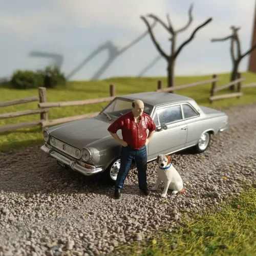
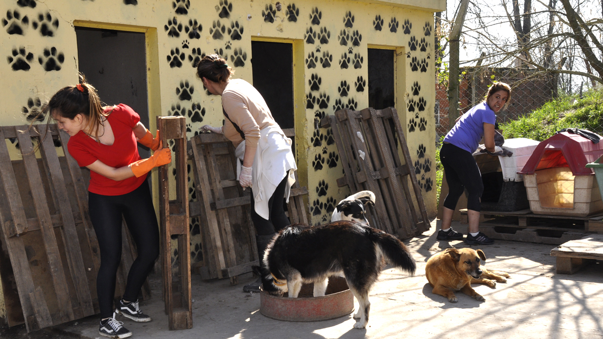

Nosotros
Huellas a Casa nació en el año 2022 gracias a un grupo de vecinos y amantes de los animales de la zona oeste del Gran Buenos Aires, unidos por el deseo de ayudar a perros y gatos en situación de abandono. Lo que comenzó como pequeños rescates y la difusión de animales perdidos a través de las redes sociales fue creciendo con el tiempo, convirtiéndose en un espacio dedicado a la protección, el cuidado y la búsqueda de hogares responsables para las mascotas rescatadas. Nuestros principios se basan en el respeto por la vida animal, la adopción responsable, la solidaridad y el compromiso con la comunidad. Creemos que cada animal merece una segunda oportunidad y una familia que le brinde amor y cuidado. Actualmente trabajamos principalmente en la zona oeste del Gran Buenos Aires y, mediante nuestras redes sociales, colaboramos en la difusión de animales perdidos y encontrados en toda la provincia de Buenos Aires.
Nuestro Equipo
En Huellas a Casa contamos con un equipo comprometido con el bienestar animal, trabajando día a día para brindar cuidado, protección y una segunda oportunidad a perros y gatos en situación de abandono.
Encargadas del refugio

María González y Lucía Fernández son las responsables del cuidado diario de los animales, su alimentación, higiene y seguimiento veterinario.
Chofer y traslados

Carlos Medina se encarga de los rescates, traslados veterinarios y distribución de donaciones e insumos.
Voluntarios

Nuestro grupo de voluntarios, integrado por Sofía Ramírez, Martín López y Valentina Ruiz, colabora en jornadas de adopción, difusión, limpieza y actividades solidarias.
Ayudanos a ayudar!
Recibimos donaciones de alimentos balanceados, mantas, medicamentos, productos de limpieza e insumos veterinarios.